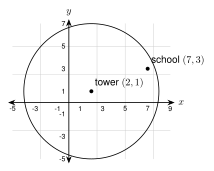
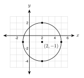
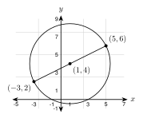
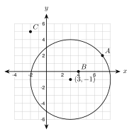
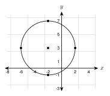

7.5 - The Equation of a Circle
A cell tower stands at \((2, 1)\) on a town map. Each unit is one mile. The tower reaches \(6\) miles in every direction. The school is at \((7, 3)\). Does the signal reach the school?

The edge of the signal is a circle. In this lesson you use the distance formula to write the equation of a circle. Then you use it to answer questions like this one.
Printable Guided Notes for this lesson (fill-in notes to print and write on)
🔥 Warm Up
Find the distance between \((1, 2)\) and \((4, 6)\).
Find the midpoint of the segment with endpoints \((-2, 4)\) and \((6, -2)\).
Write \(x^2 + 8x + 16\) as the square of a sum.
👥 Learn Together
7.5.1 - Where the Equation Comes From
A circle is all the points that are the same distance \(r\) from the center. Let the center be \((h, k)\). Let \((x, y)\) be any point on the circle.
The distance formula (Lesson 2.4) gives the distance from the center to \((x, y)\). It must equal \(r\):
\[ \sqrt{(x - h)^2 + (y - k)^2} = r. \]
Square both sides to remove the square root:
\[ (x - h)^2 + (y - k)^2 = r^2 \] The center is \((h, k)\). The radius is \(r\). For a circle centered at the origin, \(x^2 + y^2 = r^2\).
Example 1: Build the equation
A circle has center \((2, 1)\) and radius \(6\). Write its equation.
\[ (x - 2)^2 + (y - 1)^2 = 6^2 = 36 \]
Check a point: \((2, 7)\) is \(6\) units above the center. Put it in: \((2 - 2)^2 + (7 - 1)^2 = 0 + 36 = 36\). It works.
A circle has center \((-1, 3)\) and radius \(4\).
\((x + 1)^2 + (y - 3)^2 = 16\)
7.5.2 - Read and Graph
Watch the signs. The equation has \(x - h\) and \(y - k\). A plus sign inside means the center coordinate is negative.
| Equation | Center | Radius |
|---|---|---|
| \((x - 4)^2 + (y - 3)^2 = 25\) | \((4, 3)\) | \(5\) |
| \((x + 4)^2 + (y + 3)^2 = 25\) | \((-4, -3)\) | \(5\) |
The number on the right is \(r^2\). Take the square root to get \(r\).
Example 2: Read the center and radius
\((x - 4)^2 + (y + 2)^2 = 25\)
\(x - 4\) gives \(h = 4\). \(y + 2 = y - (-2)\) gives \(k = -2\). The center is \((4, -2)\). The radius is \(\sqrt{25} = 5\).
\((x + 6)^2 + (y - 1)^2 = 18\)
The center is \((-6, 1)\). The radius is \(\sqrt{18} = 3\sqrt{2} \approx 4.24\).
Example 3: Graph a circle

Graph \((x - 2)^2 + (y + 1)^2 = 9\).
The center is \((2, -1)\) and the radius is \(3\). Plot the center. Then plot points \(3\) units right, left, up, and down: \((5, -1)\), \((-1, -1)\), \((2, 2)\), \((2, -4)\). Draw a smooth circle through them.
\((x + 3)^2 + (y - 2)^2 = 16\)
\(x^2 + y^2 = 36\)
Center \((-3, 2)\), radius \(4\).
Center \((0, 0)\), radius \(6\).
7.5.3 - Write the Equation
Example 4: From a center and a radius
Center \((-2, 5)\), radius \(3\):
\[ (x + 2)^2 + (y - 5)^2 = 9. \]
Example 5: From a center and a point on the circle
A circle has center \((1, -2)\) and passes through \((4, 2)\). Find \(r^2\) with the distance formula. You do not need to take the square root, because the equation needs \(r^2\).
\[ r^2 = (4 - 1)^2 + (2 - (-2))^2 = 3^2 + 4^2 = 9 + 16 = 25 \]
\[ (x - 1)^2 + (y + 2)^2 = 25 \]
Example 6: From the ends of a diameter

A diameter has endpoints \((-3, 2)\) and \((5, 6)\). The center is the midpoint (Lesson 2.5):
\[ \left(\frac{-3 + 5}{2}, \frac{2 + 6}{2}\right) = (1, 4). \]
The radius is the distance from the center to an endpoint, \((5, 6)\):
\[ r^2 = (5 - 1)^2 + (6 - 4)^2 = 16 + 4 = 20. \]
\[ (x - 1)^2 + (y - 4)^2 = 20 \]
Check: the distance from \((1, 4)\) to the other end \((-3, 2)\) is also \(r^2 = 16 + 4 = 20\).
Center \((4, -1)\) and radius \(7\).
Center \((-3, 0)\), passing through \((1, 6)\).
A diameter with endpoints \((-2, -1)\) and \((6, 5)\).
\((x - 4)^2 + (y + 1)^2 = 49\)
\(r^2 = (1 + 3)^2 + (6 - 0)^2 = 16 + 36 = 52\). So \((x + 3)^2 + y^2 = 52\).
Center \((2, 2)\). \(r^2 = (6 - 2)^2 + (5 - 2)^2 = 16 + 9 = 25\). So \((x - 2)^2 + (y - 2)^2 = 25\).
7.5.4 - Completing the Square
Sometimes the equation is multiplied out. To find the center and radius, complete the square for \(x\) and for \(y\) (Algebra 1, Lesson 6.5). To complete \(x^2 + bx\), add \(\left(\dfrac{b}{2}\right)^2\).
Example 7: Standard form
Write \(x^2 + y^2 - 6x + 4y - 12 = 0\) in standard form. Find the center and radius.
- Group the \(x\) terms and the \(y\) terms. Move the number to the right: \((x^2 - 6x) + (y^2 + 4y) = 12\).
- Half of \(-6\) is \(-3\), and \((-3)^2 = 9\). Half of \(4\) is \(2\), and \(2^2 = 4\). Add both numbers to both sides:
\[ (x^2 - 6x + 9) + (y^2 + 4y + 4) = 12 + 9 + 4 \]
- Factor and add:
\[ (x - 3)^2 + (y + 2)^2 = 25 \]
The center is \((3, -2)\) and the radius is \(5\).
Example 8: Another one
Write \(x^2 + y^2 + 8x - 10y + 5 = 0\) in standard form.
\[ (x^2 + 8x + 16) + (y^2 - 10y + 25) = -5 + 16 + 25 \]
\[ (x + 4)^2 + (y - 5)^2 = 36 \]
The center is \((-4, 5)\) and the radius is \(6\).
\(x^2 + y^2 + 4x - 2y - 4 = 0\)
\(x^2 + y^2 + 6x + 10y + 18 = 0\)
\((x^2 + 4x + 4) + (y^2 - 2y + 1) = 4 + 4 + 1\), so \((x + 2)^2 + (y - 1)^2 = 9\). Center \((-2, 1)\), radius \(3\).
\((x^2 + 6x + 9) + (y^2 + 10y + 25) = -18 + 9 + 25\), so \((x + 3)^2 + (y + 5)^2 = 16\). Center \((-3, -5)\), radius \(4\).
Try \(x^2 + y^2 + 4x - 6y + 20 = 0\). Completing the square gives \((x + 2)^2 + (y - 3)^2 = -20 + 4 + 9 = -7\). A square cannot add to a negative number. This is not a circle. No points make it true.
7.5.5 - On, Inside, or Outside?
A point is \(r\) away from the center if it is on the circle. Put the point in the left side of the equation and compare with \(r^2\).
Compute \((x - h)^2 + (y - k)^2\) for the point.
- equal to \(r^2\): the point is on the circle
- less than \(r^2\): the point is inside
- greater than \(r^2\): the point is outside
Example 9: Does the signal reach the school?
The tower is at \((2, 1)\) with a reach of \(6\) miles, so the edge is \((x - 2)^2 + (y - 1)^2 = 36\). The school is at \((7, 3)\).
\[ (7 - 2)^2 + (3 - 1)^2 = 25 + 4 = 29 \]
\(29 < 36\), so the school is inside the circle. Yes, the signal reaches the school.
Example 10: Three points

The circle is \((x - 3)^2 + (y + 1)^2 = 25\). Is each point on, inside, or outside?
- \(A(7, 2)\): \((4)^2 + (3)^2 = 25\). Equal to \(25\), so on the circle.
- \(B(4, 0)\): \((1)^2 + (1)^2 = 2\). Less than \(25\), so inside.
- \(C(-2, 5)\): \((-5)^2 + (6)^2 = 61\). More than \(25\), so outside.
Example 11: An earthquake
An earthquake is felt up to \(10\) miles from the epicenter at \((-4, 3)\). The equation is \((x + 4)^2 + (y - 3)^2 = 100\). Which towns feel it?
- Town \((4, 6)\): \(8^2 + 3^2 = 73 < 100\). Inside. It feels the earthquake.
- Town \((2, -5)\): \(6^2 + (-8)^2 = 100\). On the circle. It is exactly \(10\) miles away, at the edge.
- Town \((6, -9)\): \(10^2 + (-12)^2 = 244 > 100\). Outside. It does not feel it.
The circle is \((x + 1)^2 + (y - 2)^2 = 25\). Test \((2, 6)\), \((-3, 5)\), and \((4, -2)\).
\((2, 6)\): \(9 + 16 = 25\), on the circle.
\((-3, 5)\): \(4 + 9 = 13 < 25\), inside.
\((4, -2)\): \(25 + 16 = 41 > 25\), outside.
✍️ Practice On Your Own
Read the center and radius.
\((x - 5)^2 + (y - 2)^2 = 49\)
\((x + 4)^2 + (y + 1)^2 = 36\)
\(x^2 + (y - 7)^2 = 25\)
\((x - 3)^2 + y^2 = 81\)
\((x + 2)^2 + (y - 6)^2 = 20\). Give the radius as a square root and as a decimal rounded to the nearest hundredth.
Write the equation.
Center \((2, -3)\), radius \(5\).
Center \((0, 0)\), radius \(9\).
Center \((-6, 4)\), radius \(2.5\).

Use the graph. The center and the four marked points are on grid points.Center \((3, -4)\), passing through \((9, 4)\).
Center \((-1, -2)\), passing through \((2, 3)\).
A diameter has endpoints \((2, 3)\) and \((8, 11)\).
A diameter has endpoints \((-7, 2)\) and \((3, 8)\).
Complete the square. Write in standard form. Give the center and radius.
\(x^2 + y^2 - 8x + 6y + 9 = 0\)
\(x^2 + y^2 + 12x - 4y + 31 = 0\)
\(x^2 + y^2 - 2x + 14y + 14 = 0\)
\(x^2 + y^2 + 6x - 8y + 30 = 0\). Is this a circle? Explain.
On, inside, or outside?
The circle is \((x - 1)^2 + (y + 3)^2 = 49\). Test each point.
\((8, -3)\)
\((4, 1)\)
\((-5, -9)\)
Real problems.
A cell tower is at \((4, -2)\) and reaches \(8\) miles. Write the equation of the edge of the signal. Does it reach the school at \((10, 4)\)? Does it reach the hospital at \((8, 2)\)?
A sprinkler at \((6, 5)\) on a yard plan waters a circle with radius \(7\) feet. Write the equation. Is the flower bed at \((10, 10)\) watered?
An earthquake is felt up to \(15\) miles from the epicenter at \((-3, -4)\). Write the equation. Is a city at \((9, 5)\) inside, on, or outside the circle?
Find the mistake.
- Jamal says: “The circle \((x - 3)^2 + (y + 5)^2 = 16\) has center \((-3, 5)\) and radius \(16\).” Find his two mistakes.
Test practice
Which is the equation of a circle with center \((-2, 5)\) and radius \(3\)?
A. \((x - 2)^2 + (y + 5)^2 = 9\)
B. \((x + 2)^2 + (y - 5)^2 = 9\)
C. \((x + 2)^2 + (y - 5)^2 = 3\)
D. \((x - 2)^2 + (y + 5)^2 = 3\)Which point is on the circle \((x - 1)^2 + (y - 2)^2 = 25\)?
A. \((5, 5)\)
B. \((6, 7)\)
C. \((3, -1)\)
D. \((2, 7)\)
Challenge
A circle has center \((3, 4)\) and touches the \(x\)-axis at one point. Write its equation. Hint: the radius is the distance from the center to the \(x\)-axis.
Find where the circle \((x - 2)^2 + (y - 1)^2 = 25\) crosses the \(x\)-axis. Hint: put \(y = 0\) and solve for \(x\). Round to the nearest hundredth.